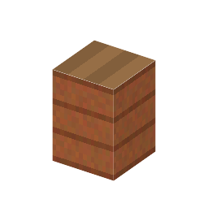

説明
①子ども 酵母を入れた砂糖水を入れておくと、だんだんお酒（アルコール）になる。
②学生 土器2＋木のハーフブロックで作る。酵母入りの砂糖水を持って右クリックで仕込む。泡が出ているあいだは発酵中。できあがったら素手で右クリック → 発酵した液2＋酵母1。 発酵した液（酒）を入れると、空気の酢酸菌で酢2になる（[11-10]）。低温殺菌した酒は入らない。
③大人 酵母は酸素の少ない所で、糖をアルコールと二酸化炭素に分けてエネルギーを得る：C6H12O6 → 2C2H5OH + 2CO2。泡は二酸化炭素。
④ガチ ジョージアでは紀元前6000年ごろの土のかめにワインの跡が残っている。今もクヴェヴリという大きな土のかめを地面に埋めてワインを作る。
作り方
使い道
（このアイテムを使うレシピは無い）